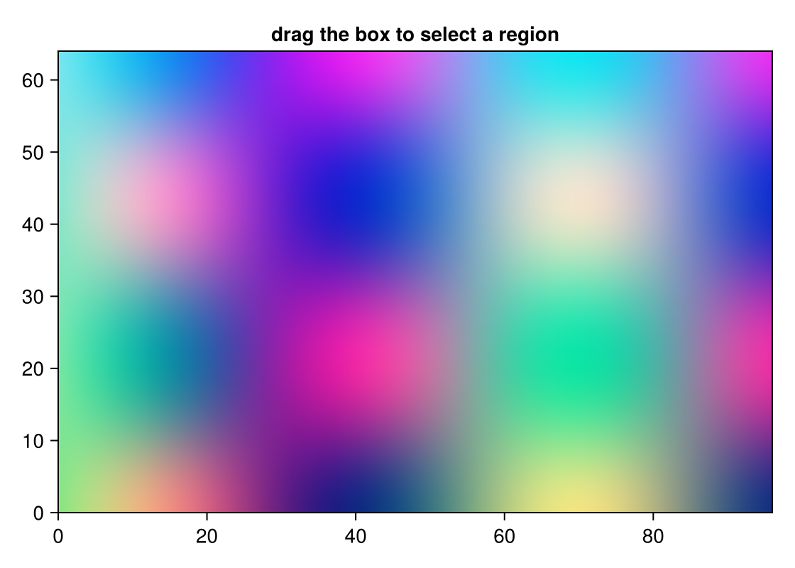

Image ROI
Drag the box over the image. When you release, the last cell reports the number of pixels inside the box and the median of each color channel.
region is a GridWindowEvent that holds the pixel ranges inside the box, not the pixel values, so you index your own arrays with it: R[region] is the block of R under the box. A GridInteractable over the image gives the box pixels to select, and selects = :img ties the box to it. See Inspect a grid and Brush a region.
Notebook as text
Drag the box over the image, and the last cell reports the median color inside it.
Plot the image, and add a box that selects cells of the pixel grid.
begin
nx, ny = 8, 6
clamp01(v) = clamp(v, 0.0, 1.0)
R = clamp01.([0.5 + 0.45 * sin(i / 1.4) * cos(j / 1.2) for i in 1:nx, j in 1:ny])
G = clamp01.([0.5 + 0.4 * cos(i / 1.7) for i in 1:nx, j in 1:ny])
B = clamp01.([0.5 + 0.45 * (j / ny) for i in 1:nx, j in 1:ny])
rgb = [RGBf(R[i, j], G[i, j], B[i, j]) for i in 1:nx, j in 1:ny]
fig = Figure(size = (560, 400))
ax = Axis(fig[1, 1]; title = "drag the box to select a region")
image!(ax, 0 .. Float64(nx), 0 .. Float64(ny), rgb)
xe = collect(0.0:1.0:nx)
ye = collect(0.0:1.0:ny)
lum = [0.299 * R[i, j] + 0.587 * G[i, j] + 0.114 * B[i, j] for i in 1:nx, j in 1:ny]
ints = [
GridInteractable(ax, xe, ye, lum; id = :img),
ROIInteractable(ax; bounds = (2.0, 5.0, 1.0, 4.0), selects = :img),
]
nothing
end@bind region stores the pixel ranges inside the box when you release it. auto = false leaves out the image's own cells, so the pointer reaches only the brightness grid and the box.
@bind region masque(fig, ints; auto = false)
This cell responds when you release the box.
if isnothing(region) || isempty(R[region])
"Drag the box over the image."
else
q(A) = round(median(A[region]); digits = 3)
"$(length(R[region])) pixels: median R $(q(R)), G $(q(G)), B $(q(B))"
endDrag the box over the image.Variations
- Pass another array of the same size as the image, such as a mask or a second channel, and index it with the same event:
mask[region]. - Read
region.i1:region.i2andregion.j1:region.j2when you need the ranges themselves, for example to crop the image withrgb[region]and plot the crop in another cell.
A box that covers no pixels gives an event whose ranges are empty, so R[region] is an empty matrix rather than an error.
Next, Box-select scatter uses the same box on points.